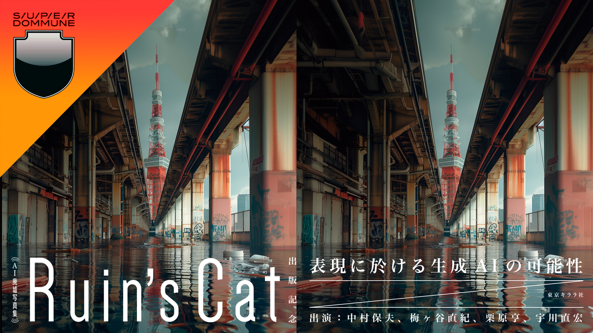
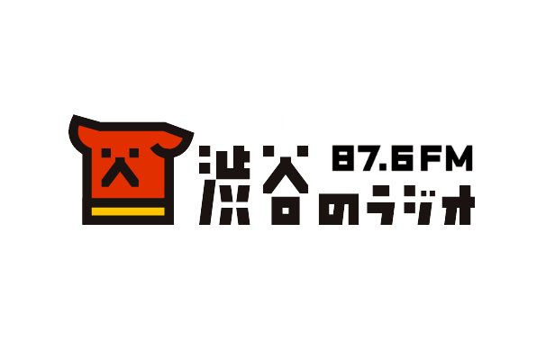

生成AIで"誰もいない架空の都市"を創造し、感性を自由にできる場所を作るとともに、AIと現実世界の接続をテーマに、作品展示を行っています。
*本ページの文章は一切生成AIを利用せず、全文に魂を込めて記述しています。誤った用語や文法などがあるかもしれませんが、人間味としてお楽しみください。
私が本格的に画像生成AIを使いはじめたのは2023年8月、生成AIを活用し、退廃した世界の画像をXに投稿し始めました。なぜAIで退廃した世界をつくりはじめたか、理由は2つありました。
① AI活用の機運
日頃、ITの領域で仕事をしていることもあり、新しいテクノロジーは先ず触るというカルチャーの中で暮らしてきました。当時、画像生成AIはまだまだ発展途上でしたが、数か月おきに画質が大きく改善されている、そんな黎明期真っ只中。このタイミングで何かに利用したいと考え、活用を開始しました。
② 人なき世界への偏愛
巨大な建築、無機質な柱、どこまでも連なる窓、自然に侵食された建物。上京して、圧倒的な数の建物に惹かれ、写真を撮り始めました。人の姿がない風景のなかで、人工物のスケールと反復に惹かれる。人類の文明の象徴が、朽ちて緑に飲み込まれていく姿に、儚さと美しさを感じる。街を旅し、10年以上好きで続けていた活動を、生成AIで拡張することができると信じ、テーマとしました。
なぜ生成AIで架空の世界を作る必要があるのか？
「現実廃墟がハードコア、AI廃墟がサイケデリック」、DOMMUNE宇川直宏さんの言葉をお借りすると、こう位置付けられます。元々写真との対比でAI作品の制作を始めたわけでは無いのですが、混同しやすい点なので違いについて触れておきます。
写真は、ある時点の対象を切り取り保存するものであり、対象は現実のため確定した歴史と未知の未来があります。一方でAIで制作する世界は、現実には存在しておらず刻まれた歴史や未来の想定はありません。それぞれ全く逆のベクトルであり、そこに唯一の正解はなく双方リスペクトされるべきものです。
生成AIによる作品はSFの世界に近く、鑑賞する人が自由に感性を遊ばせることのできるキャンバスです。『もし私がこの世界に飛び込んだら———。この建物の向こう側には何があって、耳を澄ますと何が聞こえてくるのだろう。気温はどんな感じだろうか、香りは漂っているのだろうか』などと、潜り込んでいただきたいのです。
答えはない世界、あなた自身の感性に従って自由に好きな世界を思い描く"窓"なのです。
なぜ展示に出展するのか？
2024年4月、初の展示会出展を行いました。AIの展示ではなく、廃墟展示である『滅びの美 肆ノ廃』です。そこから、AIのみの展示会も含め、ありがたいことに幾度かの展示の機会をいただき出展してきました。
展示に出展をすることに対して、人によって様々な想いや目的があると思います。私の場合、『作品を通し、自身の"問い"や"メッセージ"を鑑賞しに来てくれるみなさんへ伝え、コミュニケーションを取りたい』このような強い想いをもとに出展しています。基本的に鑑賞は自由です、好きなように楽しんでいただければ良いものです。
生成AIで作品を作っていると、現実空間の貴重さが身に沁みます。SNS投稿など、すべてがデジタルで完結してしまう世界があるからこそ、偶には五感で体感する世界があってもよいのではないでしょうか。対面でことばで会話することでしか得られない気づきがあるのではないでしょうか。
すべての出展に、私の想いを込めています。それは現代への問いであったり、メッセージであったり。是非、作品を通して何かを受け取っていただければ幸いです。

東京キララ社 Presents「AI廃墟写真集 Ruin's Cat」出版記念〜表現に於ける生成AIの可能性 2024。宇川直宏さんを交えて対談し、現実の廃墟との棲み分けや、AIを使った表現の可能性について議論しました。
アーカイブを見る →
ラジオ番組に出演。現役高校生のリスナーから感想文と質問が届くなど、AIネイティブ世代の視点に触れる機会となりました。
アーカイブを見る →AI廃墟の作品集を紙の書籍として出版。AIによる表現がSNSの枠を超えて現実世界に登場したことで、新しい表現の可能性を考える契機となりました。
書籍を見る →